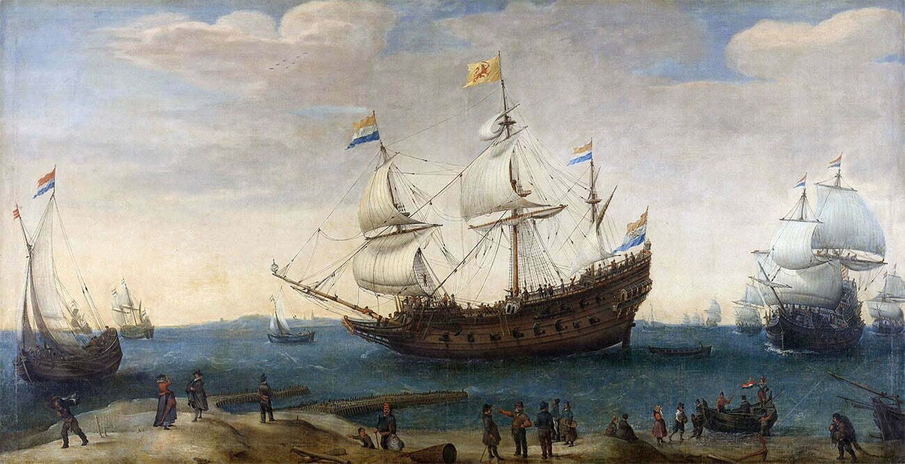

Veja
Navegações Holandesas
Introdução
A Holanda, embora tenha se destacado como uma grande negociadora dos mares durante as Grandes Navegações, entrou tardia nesse empreendimento em comparação com Portugal e Espanha, que partiram para o mar a partir do século XV. Neste texto, exploraremos as razões que contribuíram para o atraso holandês nas Grandes Navegações.
Motivos que levaram ao atraso
O atraso na participação holandesa nas Grandes Navegações pode ser atribuído a duas razões principais. Em primeiro lugar, a maior parte do capital holandês estava investida no próspero comércio do Mar do Norte e no financiamento da expansão portuguesa. Os holandeses, conhecidos por sua excelência como negociantes, priorizaram essas atividades comerciais antes de se tornarem navegadores experientes.
Em segundo lugar, o domínio exercido pela Espanha sobre a Holanda durante grande parte do século XVI também retardou suas incursões pelos mares. A ocupação espanhola e a instabilidade política resultante dificultaram a possibilidade de os holandeses embarcarem em grandes empreendimentos marítimos na mesma época em que Portugal e Espanha iniciaram suas próprias jornadas de exploração.
Conquistas
No ano de 1579, posterior à liberdade em relação à Espanha, os holandeses empreenderam enormes conquistas marítimas, assumindo o controle de vários territórios situados nos continentes africano, asiático e americano.
Regiões como a do Cabo, na África; o Ceilão, na Ásia; a Nova Amsterdã (atual Nova York); vários territórios no nordeste do Brasil e as ilhas Antilhas na América.
Considerado o Século de Ouro Holandês (XVII), foi o momento de maiores conquistas para a Holanda. Durante estes anos, a República das Sete Províncias Unidas dos Países Baixos cresceu economicamente estendendo seus territórios, comércio e cultura por diversos locais. Ao mesmo tempo em que colonizaram Java, chegavam ao Nordeste do Brasil, denominado na época como Brasil neerlandês.
Os holandeses realizaram duas tentativas de incorporação de parte do território brasileiro. A primeira ocorreu entre 1624 e 1625, no século XVII, quando invadiram o Brasil, passaram pela Bahia e deixaram algumas influências na arquitetura da cidade de Salvador.
Em sua segunda tentativa de invasão ao Brasil, ocorrida entre 1630 e 1654, também no século XVII, a Holanda conquistou uma parte do nordeste brasileiro, incluindo as regiões açucareiras do norte da capitania de Pernambuco e a atual cidade de São Luís, capital do Maranhão. Em Pernambuco e em São Luís, é evidente a presença da influência holandesa na arquitetura local.
Navegadores de destaque
Considerado o primeiro europeu a avistar as terras australianas Willem Janszoon foi um importante navegador holandes. Em 1605, sua embarcação rumou de Bantam à costa oeste da Nova Guiné. Então, cruzou o extremo oriente do Mar de Arafura. Um ano depois, desembarcou no Rio Pennefather (oeste do Cabo York), em Queensland, próximo à atual cidade de Weipa. Janszoon mapeou 320 km da costa da Austrália. No ano de 1615, Jacob Le Maire e Willem Schouten navegaram contornando o Cabo Horn para provar que a Tierra del Fuego não era uma ilha tão grande.
Em sua terceira expedição saindo da Holanda, ele buscava encontrar as preciosas especiarias das Índias. Janszoon integrava a frota de 12 navios liderada por Steven van der Hagen, e ao alcançar a Índia, recebeu a missão de descobrir novas rotas comerciais na vasta região.
Abel Tasman, importante explorador holandês e comerciante a serviço da Companhia Holandesa das Índias Orientais (VOC), entre 1642 e 1644, comandou a viagem de circum-navegação à chamada Nova Holanda. Essa expedição permitiu provar que a Austrália não fazia parte do sul do continente. Abel Tasman ganhou destaque ao ser considerado o pioneiro a chegar à Terra de Van Diemen, atualmente conhecida como Tasmânia, e a avistar as ilhas de Fiji em 1643. Junto com seu navegador Visscher e o comerciante Gillemans, ele produziu mapas precisos da Austrália, das ilhas do Pacífico e da Nova Zelândia.
Além das importantes descobertas feitas por Abel Tasman, os holandeses também tiveram sua participação na colonização da América. Após a fundação da Companhia Holandesa das Índias Ocidentais em 1621, teve início a expedição de Olivier van Noort. Alguns historiadores sugerem que ele planejou uma invasão pela baía de Guanabara enquanto estava passando pela costa brasileira.
As embarcações de Van Noort partiram de Roterdã, nos Países Baixos, em 1598. Entretanto, a tentativa de desembarque na baía de Guanabara não obteve sucesso devido a ataques indígenas e à artilharia da Fortaleza de Santa Cruz da Barra. Além dessas dificuldades, os holandeses enfrentaram retaliações em outras regiões da América, incluindo baixas em um ataque indígena na Patagônia (atual Chile) e conflitos com as forças armadas da Espanha no Peru. Apesar desses reveses, alguns historiadores atribuem a Van Noort a descoberta da Antártida.
Seis anos depois, as invasões holandesas no Brasil começaram. Elas se dividem entre os períodos da Invasão de Salvador (Bahia) e a Invasão de Olinda e Recife (Pernambuco). Essas invasões dividiram-se em três fases: Fase de resistência ao invasor (1630-1637), administração de Maurício de Nassau (1637-1644) e Insurreição Pernambucana (1644-1654). A Insurreição Pernambucana foi, conhecida também por Guerra da Luz Divina, foi o movimento que expulsou os neerlandeses do Brasil.
Conclusão
As Navegações holandesas foram importantes pois tornaram evidentes as habilidades comerciais dos holandeses, que dominaram todo o transporte e venda da cana-de-açúcar produzida nos engenhos brasileiros durante os séculos XVI e XVII.
Assista
Videoaulas
Expansão Marítima da Holanda
Depois da crise do século XIV, comerciantes e nobreza da Europa queriam expandir suas riquezas. Buscavam o comércio com as Índias, mas chegaram à América e África e começaram a conquista e exploração.
Colônias da Holanda
No vídeo de hoje, o professor Biro, de História, faz um resumo sobre a formação de Portugal e as Grandes Navegações.